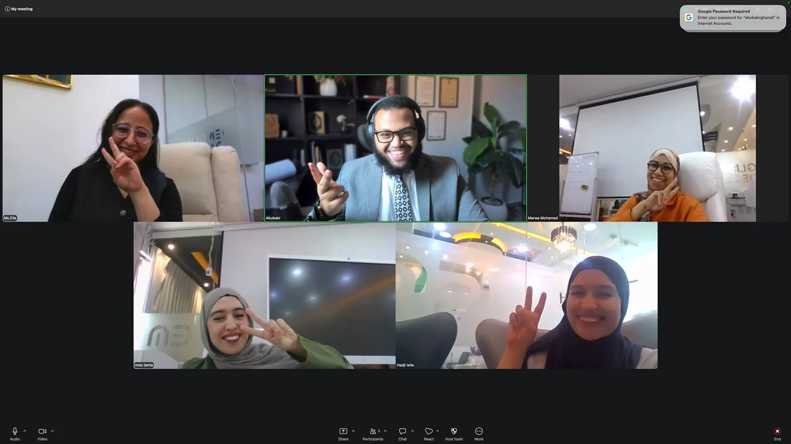

Currently teaching onlineStudents from 8 countries worldwide
9+ Years of Teaching ExperienceInternational StudentsOnline English EducationPersonalized Lessons
Teaching English to learners from different cultures and backgrounds.
About Abu Bakr
Meet your English coach
Abu Bakr Mukhtar has spent 9+ years doing one thing: helping learners go from hesitant to fluent — teaching hundreds of one-to-one students online from all over the world.
His students come to him with real goals:
Business English — lead meetings, write clear emails, present and negotiate without second-guessing every word. He designs Business English & ESP programs for corporate and university clients.
English for travel & everyday life — order, ask, explain and connect with ease, and actually enjoy the conversation.
Exam preparation — his specialty: IELTS, TOEFL, SAT, ACT & EST. He doesn't just teach the language; he teaches the strategy, the timing, and the exact skills each exam rewards.
He is a Cambridge DELTA-certified trainer, published IELTS author, and former IELTS Speaking Examiner, and also works as a Learning & Development & Quality Assurance Specialist who trains other teachers and builds AI-powered learning materials — you learn at the highest standard, every session.
FlaingoTyroCompanies & Universities8 CountriesIELTSTOEFLSAT · ACT · EST
Not sure which path is right for you? Open See the Roadmap under any path first — it shows every level, the months and sessions it takes, the books you will work from, the homework, and where the path ends.
Levels are named the Egyptian way: A1 Starter, A2 Pre-Intermediate, B1 Intermediate, B2 Upper-Intermediate. All lessons are private 1-to-1, and every path ends at the first step of B2 — finishing the whole of B2 is C1-level work and is agreed as a separate plan.
1:1
Private CoachingFull attention during your lessons
⌁
Live Zoom LessonsInteractive online learning
✓
Qualified TeachingProfessional English instruction
↗
Progress TrackingContinuous follow-up toward your goal
◎
Personalized PlanBuilt around your level and needs
Teaching Method
The Flipped Classroom
You prepare before class, then use class time for what matters most: speaking, practice, and real conversation.
01
Prepare
Before class, study a short video, text, or vocabulary lesson at your own pace.
02
Speak
Come to class ready, so we can spend more time speaking instead of listening to lectures.
03
Practice
Use real conversations and practical tasks to turn English knowledge into a real skill.
04
Improve
Get focused feedback and keep building fluency, confidence, and accuracy.
Teaching & Live Sessions
Learning happening in real time
From 1-to-1 lessons to live training sessions and workshops.

Training session with educators
Global Experience
Teaching English across borders
Connecting with learners from different countries, cultures, and backgrounds — all from a single online classroom.
China
Philippines
Saudi Arabia
United Arab Emirates
Qatar
Yemen
Turkey
Egypt
Professional Experience
Experience that goes beyond the classroom
9+ Years
Teaching English to non-native speakers.
International Students
Remote teaching experience with learners from multiple countries.
Flaingo
Experience working with an English teaching platform.
Tyro
Experience working with an English teaching platform.
Companies & Universities
Experience providing English education in professional and academic environments.
Who Is This For
Who can benefit from these lessons?
Beginners
Intermediate Learners
Advanced Learners
University Students
Professionals
Preparing for International Opportunities
Better Speaking Skills
More Confidence in English
FAQ
Frequently asked questions
Lessons are designed for non-native English speakers at any level, from beginners to advanced learners, including students and working professionals.
Yes. All lessons are conducted online, so you can learn from anywhere in the world.
Yes. Every learning plan is built around your current level, goals, and the areas you most want to improve.
Yes. Lessons can be focused primarily on speaking and fluency if that is your main goal.
Please contact Abu Bakr for more details, or fill out the trial lesson form below.
Please contact Abu Bakr for more details.
Book a Trial Lesson
Ready to improve your English?
Take the first step toward more confident and effective communication in English.
Level by level, two months at a time. You start with a speaking assessment, then finish A1 Starter, A2 Pre-Intermediate and B1 Intermediate — and arrive at the first step of B2 Upper-Intermediate.
Start LevelA1 Starter
Finish LevelFirst step of B2
Main bookSpeakout Starter → Pre-Intermediate
Payment16,800 EGP · 4 installments
This path finishes 3 levels — 6 months, 48 live sessions2 months and about 16 private 1-to-1 sessions per level
A short speaking interview and a written test, then we agree on your goal and fix how many live sessions you need each week.
We work from: the level your test shows, plus other well-known books for extra practice.
Homework: A 20-minute reading and listening task, twice a week.
You finish this stage able to: Know exactly what to work on, and why.
02
The base of the language: greetings, introducing yourself, family, food, numbers, time, prices, and daily routines.
We work from: Speakout Starter, plus other well-known books for extra practice.
Homework: Book exercises, 10 minutes of listening a day, and one recorded speaking task every week.
You finish this stage able to: Hold a 5-minute conversation about your life, your work, and your day.
03
Now the language starts paying off: past and future, shopping, travel, health, work and study, and describing people.
We work from: Speakout Elementary, plus other well-known books for extra practice.
Homework: Book exercises, plus one short writing task and one 2-minute speaking recording every week.
You finish this stage able to: Handle real situations in English without switching to Arabic.
04
This is the level that turns knowledge into fluency: storytelling, opinions and reasons, technology, environment, and longer conversations.
We work from: Speakout Pre-Intermediate, plus other well-known books for extra practice.
Homework: One 150-word text, one listening summary, and one recorded presentation every week.
You finish this stage able to: Speak for 10 minutes on any everyday topic with only a few mistakes.
05
The path stops at the first step of B2 Upper-Intermediate on purpose: finishing the whole of B2 is C1-level work. You finish with A1, A2 and B1 complete, a written level report, and a clear recommendation for the separate B2 course.
We work from: a review built from your own weak points in B1, plus other well-known books.
Homework: Your weakest skill only, focused on the last two days of the level.
You finish this stage able to: Move into B2 Upper-Intermediate with a finished B1 and a written report behind you.
Typical pace: 2 live Zoom sessions a week — 8 a month, about 16 per level. One session a week works too, and the same 16 sessions then take four months. Move faster and we move faster with you, and every level ends with a quick check before we move on.
You already have the basics, so we skip the foundation: finish A2 Pre-Intermediate and B1 Intermediate in about four months, then arrive at the first step of B2 Upper-Intermediate.
Start LevelA2 Pre-Intermediate
Finish LevelFirst step of B2
Main bookSpeakout Elementary → Pre-Intermediate
Payment11,200 EGP · 3 installments
This path finishes 2 levels — 4 months, 32 live sessions2 months and about 16 private 1-to-1 sessions per level
A short speaking interview and a written test, then we agree on your goal and fix how many live sessions you need each week.
We work from: the level your test shows, one level higher, plus other well-known books.
Homework: A 20-minute reading and listening task, twice a week.
You finish this stage able to: Know exactly what to work on, and why.
02
Stronger basics first: past and future, shopping, travel, health, work and study, and describing people.
We work from: Speakout Elementary, plus other well-known books for extra practice.
Homework: Book exercises, plus one short writing task and one 2-minute speaking recording every week.
You finish this stage able to: Handle real situations in English without switching to Arabic.
03
This is the level that turns knowledge into fluency: storytelling, opinions and reasons, technology, environment, and longer conversations.
We work from: Speakout Pre-Intermediate, plus other well-known books for extra practice.
Homework: One 150-word text, one listening summary, and one recorded presentation every week.
You finish this stage able to: Speak for 10 minutes on any everyday topic with only a few mistakes.
04
The path stops at the first step of B2 Upper-Intermediate on purpose: finishing the whole of B2 is C1-level work. You finish with A2 and B1 complete, a written level report, and a clear recommendation for the separate B2 course.
We work from: a review built from your own weak points in B1, plus other well-known books.
Homework: Your weakest skill only, focused on the last two days of the level.
You finish this stage able to: Move into B2 Upper-Intermediate with a finished B1 and a written report behind you.
Typical pace: 2 live Zoom sessions a week — 8 a month, about 16 per level. One session a week works too, and the same 16 sessions then take four months. Move faster and we move faster with you, and every level ends with a quick check before we move on.
A short, focused program: one full level, about two months, to fix accuracy and fluency where they break down and finish B1 properly.
Start LevelB1 Intermediate
Finish LevelFirst step of B2
Main bookSpeakout Pre-Intermediate
Payment5,600 EGP · 2 installments
This path finishes 1 level — 2 months, 16 live sessions2 months and about 16 private 1-to-1 sessions for the level
B1 IntermediateB2 Upper-Intermediate start
01
A speaking interview plus one task in reading, writing, and listening, so we work on your actual weak points instead of repeating what you already know.
We work from: Speakout Pre-Intermediate at the level your test shows, plus other well-known books.
Homework: A short gap-fixing task from day one.
You finish this stage able to: Know exactly what to work on, and why.
02
Giving an opinion and defending it, formal writing, work and study language, and longer speaking under time pressure — chosen from the parts you actually need after your test.
We work from: Speakout Pre-Intermediate, plus other well-known books for extra practice.
Homework: One 150-word text, one listening summary, and one recorded presentation every week.
You finish this stage able to: Speak for 10 minutes on any everyday topic with only a few mistakes.
03
The path stops at the first step of B2 Upper-Intermediate on purpose: finishing the whole of B2 is C1-level work. You finish with B1 complete, a written level report, and a clear recommendation for the separate B2 course.
We work from: a review built from your own weak points in B1, plus other well-known books.
Homework: Your weakest skill only, focused on the last two days of the level.
You finish this stage able to: Move into B2 Upper-Intermediate with a finished B1 and a written report behind you.
Typical pace: 2 live Zoom sessions a week — 8 a month, about 16 per level. One session a week works too, and the same 16 sessions then take four months. Move faster and we move faster with you, and every level ends with a quick check before we move on.